1.1 작성 목적
본 문서의 목적은 그룹 관리자가 IDN 서비스에서 제공하는 주요 기능을 정확하게 이해하고, 소속 그룹 범위 안에서 실제 운영 업무를 안정적으로 수행할 수 있도록 지원하는 데 있다.
Operational Documentation
그룹 관리자가 자기 그룹 범위 안에서 사용자, 네트워크, 요청, 감사 이력을 안전하게 운영할 수 있도록 실제 업무 순서에 맞춰 정리한 가이드다. 각 메뉴에서 무엇을 먼저 확인하고, 저장 후 어떤 상태를 다시 봐야 하는지까지 함께 안내한다.
본 문서는 ㈜클라우드플러그에서 개발한 IDN 서비스 사용자를 대상으로 시스템의 주요 기능과 화면 구성, 그리고 각 기능별 사용 방법을 이해하기 쉽도록 설명하기 위해 작성된 문서이다.
그룹 관리자는 자신의 소속 그룹 범위 내에서 대시보드, 사용자, 부서, 네트워크 자원, 요청, 감사 이력을 조회하고 관리할 수 있으며, 최고 관리자 전용 메뉴인 조직 관리, 라이선스 관리, 보안 및 정책, 시스템품질에는 접근하지 않는다.
실제 운영에서는 대시보드 점검 후 사용자와 부서 구조를 정비하고, 네트워크 자원과 요청 처리 현황을 확인한 다음, 관리자 설정과 감사 이력까지 점검하는 순서로 진행하는 것이 안전하다.
본 문서의 목적은 그룹 관리자가 IDN 서비스에서 제공하는 주요 기능을 정확하게 이해하고, 소속 그룹 범위 안에서 실제 운영 업무를 안정적으로 수행할 수 있도록 지원하는 데 있다.
그룹 관리자는 로그인 화면에서 계정 ID와 비밀번호를 입력해 접속한다. 로그인 이후 2단계 인증 또는 비밀번호 재설정이 필요한 경우 해당 화면으로 이동한다.
▶메뉴 위치: 로그인 화면
▶기능 설명:
그룹 관리자 계정으로 시스템에 접속한다.
▶사용 절차:
1. 로그인 화면에 접속한다.
2. 아이디와 비밀번호를 입력한다.
3. 로봇 확인 항목을 선택한다.
4. 로그인 버튼을 클릭한다.
5. 인증 결과에 따라 다음 화면으로 이동한다.
▶입력 항목:
| 항목 | 설명 | 입력 가이드 |
|---|---|---|
| 아이디 | 그룹 관리자 계정 ID | 필수 입력 |
| 비밀번호 | 계정 비밀번호 | 필수 입력 |
▶처리 결과 / 유의사항:
로그인 실패 시 오류 메시지가 표시된다.
그룹 관리자는 로그인 직후부터 자신의 그룹 범위로 자동 제한되어 다른 조직으로 전환할 수 없다.
로그인 실패가 반복되면 계정 잠금과 비밀번호 만료 여부를 함께 확인한다.
▶스크린샷:
| 화면명 | 이미지 |
|---|---|
| 로그인 화면 |  |
그룹 관리자 화면은 좌측 사이드바 중심의 관리자 콘솔이다.
주요 메뉴는 대시보드, 관리, 관리자 설정, 감사로 구성된다.
그룹 관리자는 로그인한 계정의 그룹 범위가 자동 적용되므로 메뉴에 진입하면 자기 그룹 데이터가 바로 조회된다.
상단의 알림 아이콘은 시스템에서 발생한 주요 이벤트와 안내 사항을 확인하는 영역이다.
알림 아이콘을 클릭하면 알림 목록을 조회할 수 있다.
알림 목록 확인: 헤더 영역의 알림 아이콘을 클릭한다.
알림 내용 확인: 알림 목록에서 확인할 알림을 클릭하면 해당 알림이 읽음 상태로 처리된다.
모두 알림 읽음: 알림 목록 상단의 `모두 읽음`을 클릭하면 모든 알림이 읽음 상태로 일괄 처리된다.
| 항목 | 설명 |
|---|---|
| 알림 유형 | 정보 알림, 보안 알림 등 이벤트 성격에 따른 구분 |
| 알림 내용 | 시스템에서 발생한 이벤트에 대한 요약 설명 |
| 발생 시점 | 알림이 발생한 시점 |
| 읽음 상태 표시 | 확인 여부를 확인하는 표시 |
▶스크린샷:
| 화면명 | 이미지 |
|---|---|
| 알림 목록 화면 | 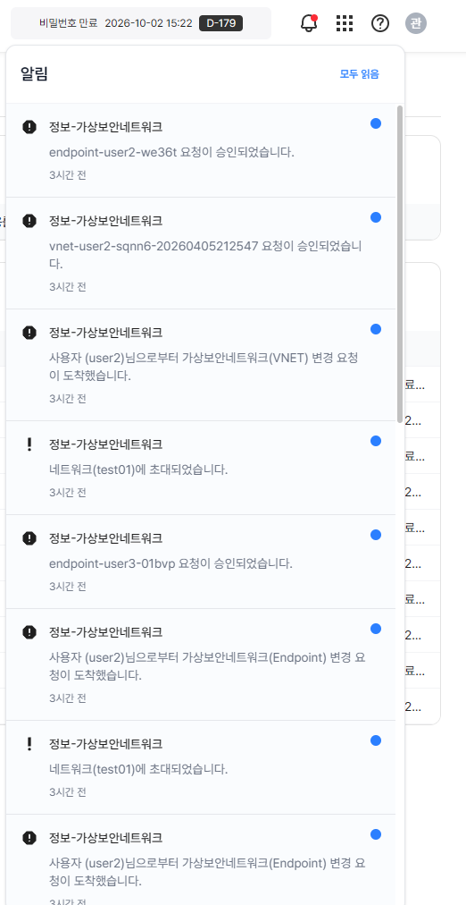 |
현재 로그인한 사용자 계정 정보 확인 및 로그아웃 기능을 제공하는 영역이다.
사용자 메뉴: 헤더 영역 우측의 사용자 아이콘을 클릭한다.
| 항목 | 설명 |
|---|---|
| 사용자 계정명 | 현재 로그인한 사용자의 계정명을 확인 |
| 사용자 이메일 | 현재 로그인한 사용자의 이메일 확인 |
| 사용자 역할 | 현재 로그인한 사용자의 역할 확인 |
| 로그아웃 | 로그인 세션 종료 버튼 |
| 계정 설정 버튼 | 현재 로그인한 계정의 설정 화면으로 이동하는 버튼 |
▶스크린샷:
| 화면명 | 이미지 |
|---|---|
| 사용자 메뉴 화면 | 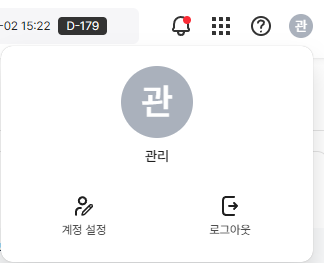 |
| 1차 메뉴 | 2차 메뉴 |
|---|---|
| 대시보드 | 대시보드 |
| 관리 | 컨트롤러 관리, 중계서버 관리, 가상보안네트워크 관리, 사용자 관리, 부서 관리, 알람 관리, 이상감지 관리, 요청 관리 |
| 관리자 설정 | 관리자 설정 |
| 감사 | 감사 |
| 항목 | 설명 |
|---|---|
| 데이터 범위 | 그룹 범위로 고정 |
| 그룹 선택기 | 최고 관리자용 그룹 컨텍스트 전환 기능은 비활성화 |
좌측 사이드바에서 현재 메뉴 위치를 확인한다.
상단 검색, 필터, 상태 요약 영역을 먼저 본다.
목록 화면에서는 행 개수와 상태를 먼저 확인한다.
등록 또는 수정 작업은 우측 상단 버튼과 행별 액션 버튼으로 시작한다.
저장 후에는 목록 반영 여부와 상태 표시를 다시 확인한다.
▶메뉴 위치: 좌측 메뉴 > 대시보드
▶기능 설명:
소속 그룹 기준의 운영 현황을 요약해 보여준다.
하루 업무를 시작할 때 가장 먼저 열어 오늘 처리할 알람, 이상 징후, 요청 현황을 확인하는 화면이다.
▶사용 절차:
1. 대시보드를 연다.
2. 처리 대기 건수, 사용자/장치/네트워크 현황, 알람과 이상감지 추이를 확인한다.
3. 필요한 항목을 클릭해 관련 화면으로 이동한다.
▶처리 결과 / 유의사항:
그룹 관리자 화면은 그룹 범위로 조회된다.
최근 감사 이력을 함께 확인하면 같은 그룹 내 선행 작업을 빠르게 파악할 수 있다.
대시보드에서 이상 징후를 봤다면 알람 관리나 이상감지 관리로 이어서 상세 원인을 확인한다.
▶스크린샷:
| 화면명 | 이미지 |
|---|---|
| 대시보드 화면 | 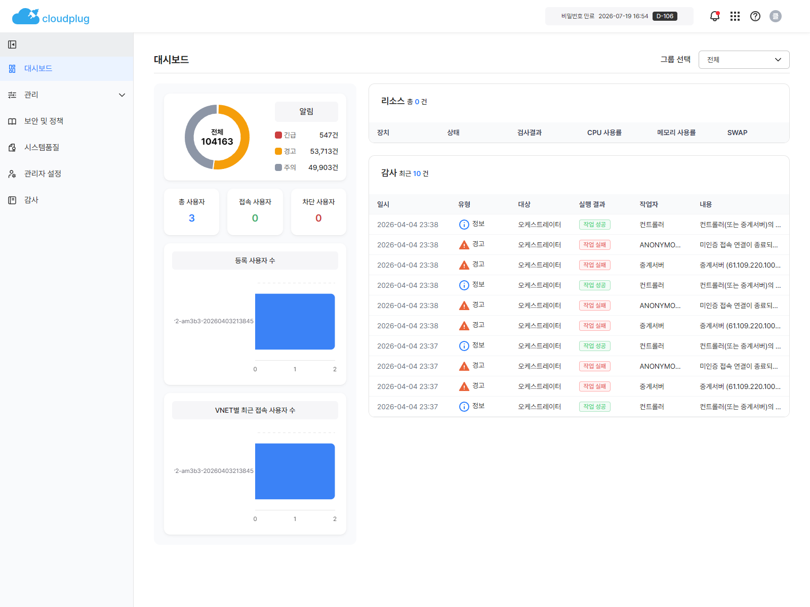 |
▶메뉴 위치: 좌측 메뉴 > 관리 > 컨트롤러 관리
▶기능 설명:
소속 그룹의 컨트롤러를 조회, 등록, 수정, 삭제한다.
이후 VNET과 엔드포인트에서 참조되는 기반 자원을 정리하는 화면이다.
▶처리 결과 / 유의사항:
조회 범위는 그룹 기준으로 제한된다.
컨트롤러 등록 후에는 연결 상태와 관련 감사 로그를 함께 확인하는 것이 좋다.
이름과 설명은 이후 VNET 선택 화면에서 바로 보이므로 설치 위치와 용도가 드러나게 작성하는 편이 좋다.
컨트롤러 목록을 조회하고 검색과 필터로 대상을 찾는다.
1. 컨트롤러 관리 화면으로 이동한다.
2. 검색어로 대상을 조회한다.
3. 연결 상태와 등록 상태를 함께 확인한다.
| 화면명 | 이미지 |
|---|---|
| 컨트롤러 관리 화면 | 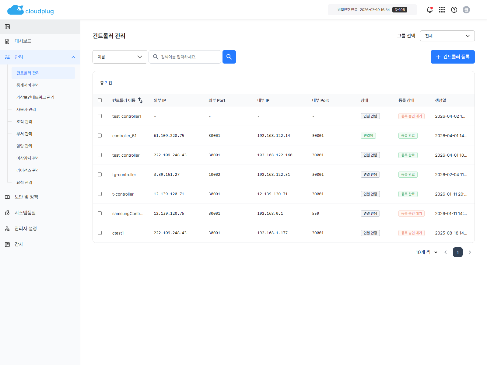 |
등록 팝업에서 이름과 설명을 입력해 컨트롤러를 생성한다.
1. 우측 상단 `등록` 버튼을 클릭한다.
2. `컨트롤러 등록` 팝업에서 이름과 설명을 입력한다.
3. `등록하기` 버튼을 클릭한다.
4. 목록에 새 컨트롤러가 표시되는지 확인한다.
| 화면명 | 이미지 |
|---|---|
| 컨트롤러 등록 팝업 | 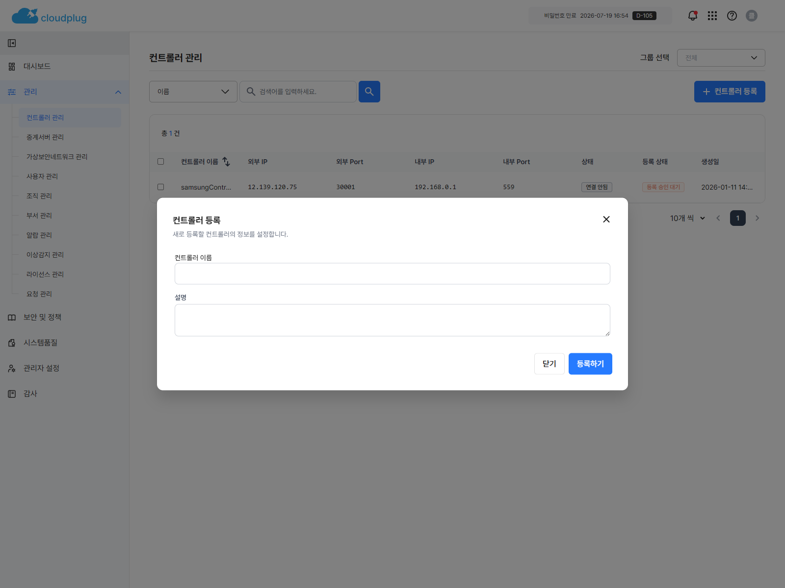 |
수정 화면에서 이름과 설명을 변경하고 저장 후 목록 반영 여부를 확인한다.
1. 수정할 컨트롤러 행의 `수정` 버튼을 클릭한다.
2. 이름, 설명 등 변경할 항목을 수정한다.
3. 저장 후 목록에서 변경 내용이 반영됐는지 확인한다.
`고급 설정`을 누르면 외부 IP, 외부 포트, 내부 IP, 내부 포트를 변경할 수 있다.
수정 시 컨트롤러 이름, 설명, 연결 상태와 등록 상태가 의도치 않게 변하지 않았는지 함께 확인한다.
| 화면명 | 이미지 |
|---|---|
| 컨트롤러 수정 화면 | 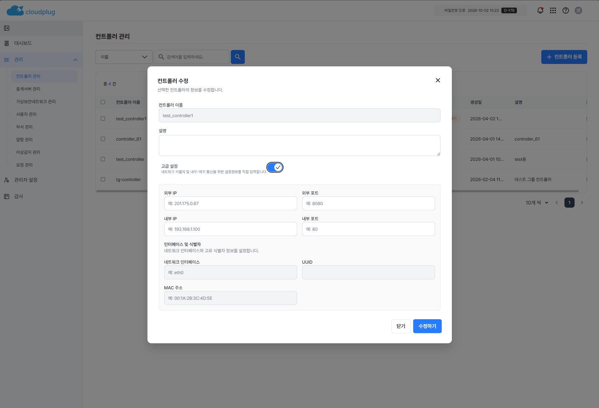 |
삭제 확인 팝업에서 대상을 확인한 뒤 컨트롤러를 제거한다.
1. 삭제할 컨트롤러 행의 `삭제` 버튼을 클릭한다.
2. `컨트롤러 삭제 확인` 팝업에서 삭제 대상을 다시 확인한다.
3. `삭제` 버튼을 눌러 삭제를 확정한다.
4. 목록에서 해당 컨트롤러가 제거됐는지 확인한다.
삭제 확인 팝업에서는 선택한 컨트롤러 이름이 표시되므로 삭제 대상이 맞는지 다시 확인한 뒤 `취소` 또는 `삭제`를 선택한다.
컨트롤러를 사용 중인 VNET이 있으면 삭제 전 영향 범위를 먼저 확인한다.
| 화면명 | 이미지 |
|---|---|
| 컨트롤러 삭제 확인 화면 | 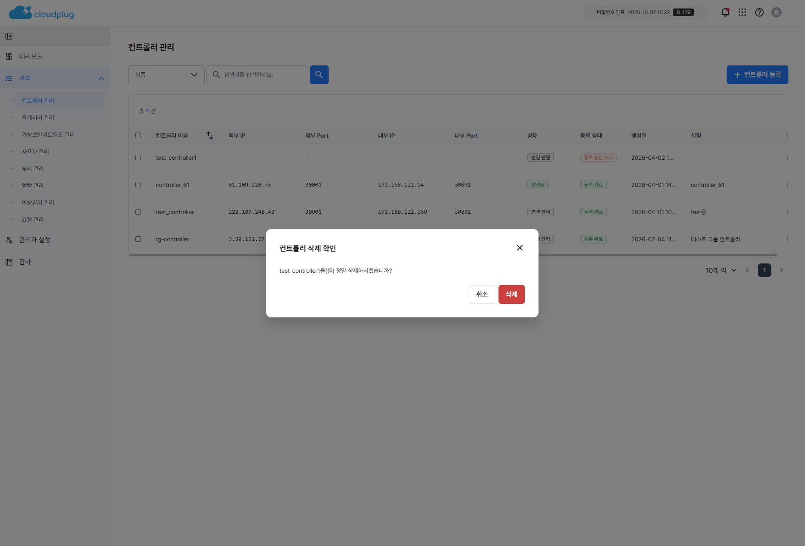 |
▶메뉴 위치: 좌측 메뉴 > 관리 > 중계서버 관리
▶기능 설명:
소속 그룹의 중계서버를 조회, 등록, 수정, 삭제한다.
중계서버 목록을 조회하고 검색 조건으로 대상을 찾는다.
1. 중계서버 관리 화면으로 이동한다.
2. 검색 조건으로 목록을 조회한다.
3. 상태와 설명을 함께 확인한다.
| 화면명 | 이미지 |
|---|---|
| 중계서버 관리 화면 | 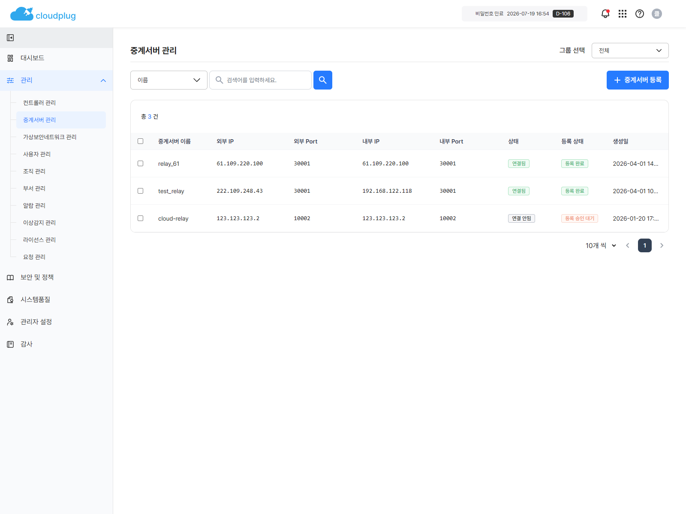 |
등록 팝업에서 이름과 설명을 입력해 새 중계서버를 만든다.
1. `등록` 버튼을 클릭한다.
2. `중계서버 등록` 팝업에서 이름과 설명을 입력한다.
3. `등록하기`를 클릭한다.
4. 목록 추가 여부와 VNET 생성 화면 노출 여부를 확인한다.
| 화면명 | 이미지 |
|---|---|
| 중계서버 등록 팝업 |  |
중계서버 수정 팝업에서 이름과 설명을 변경한다.
1. 수정할 중계서버 행의 `수정` 버튼을 클릭한다.
2. 이름과 설명을 수정한다.
3. 저장 후 목록 반영 여부를 확인한다.
`고급 설정`을 누르면 외부 IP, 외부 포트, 내부 IP, 내부 포트를 변경할 수 있다.
| 화면명 | 이미지 |
|---|---|
| 중계서버 수정 화면 | 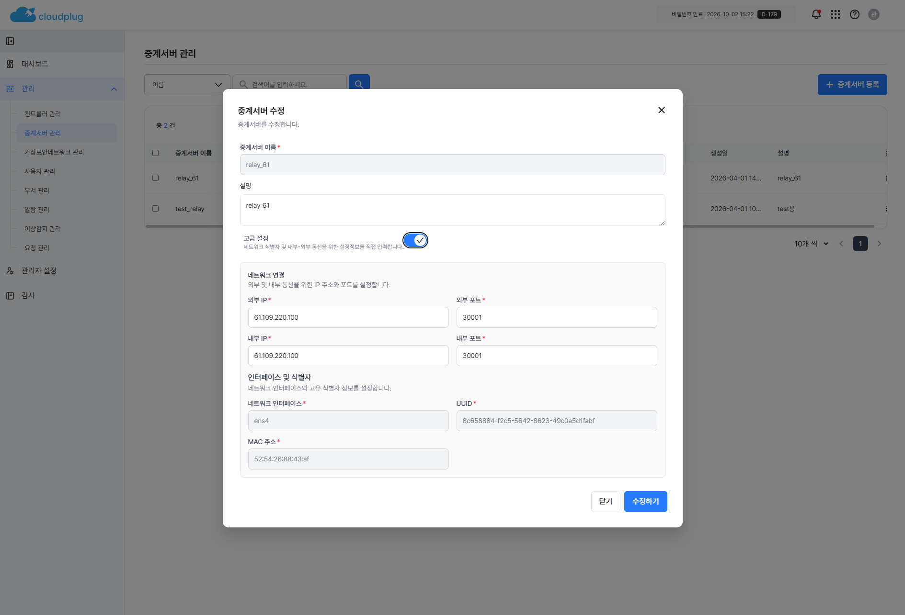 |
삭제 확인 팝업에서 대상을 확인한 뒤 중계서버를 삭제한다.
1. 삭제할 중계서버 행의 `삭제` 버튼을 클릭한다.
2. `중계서버 삭제 확인` 팝업에서 삭제 대상을 다시 확인한다.
3. `삭제` 버튼을 눌러 삭제를 확정한다.
4. 목록에서 제거 여부를 확인한다.
삭제 확인 팝업에서는 선택한 중계서버 이름이 표시되므로 삭제 대상이 맞는지 다시 확인한 뒤 `취소` 또는 `삭제`를 선택한다.
중계서버를 참조 중인 VNET이 있는 경우 삭제 전 영향 범위를 확인한다.
| 화면명 | 이미지 |
|---|---|
| 중계서버 삭제 확인 화면 | 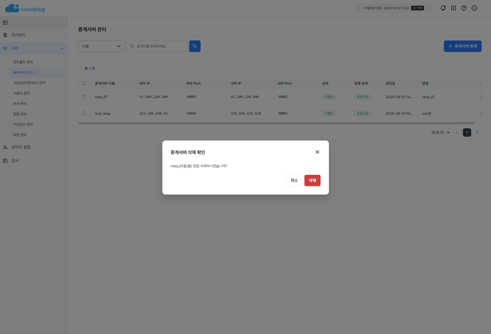 |
▶메뉴 위치: 좌측 메뉴 > 관리 > 가상보안네트워크 관리
▶기능 설명:
그룹 범위의 VNET과 엔드포인트를 관리한다.
내부 화면으로 VNET, 엔드포인트, 토폴로지를 사용한다.
▶사용 절차:
1. 가상보안네트워크 관리 화면으로 이동한다.
2. 대상 하위 화면을 선택한다.
3. 목록을 조회한 뒤 생성, 수정, 삭제 또는 상태 변경을 수행한다.
▶처리 결과 / 유의사항:
세부 화면은 최고 관리자와 유사하나 소속 그룹 범위로 제한된다.
생성 작업 시 최고 관리자처럼 별도 그룹 선택 경고가 나타나지 않는다.
▶스크린샷:
| 화면명 | 이미지 |
|---|---|
| 가상보안네트워크 관리 화면 | 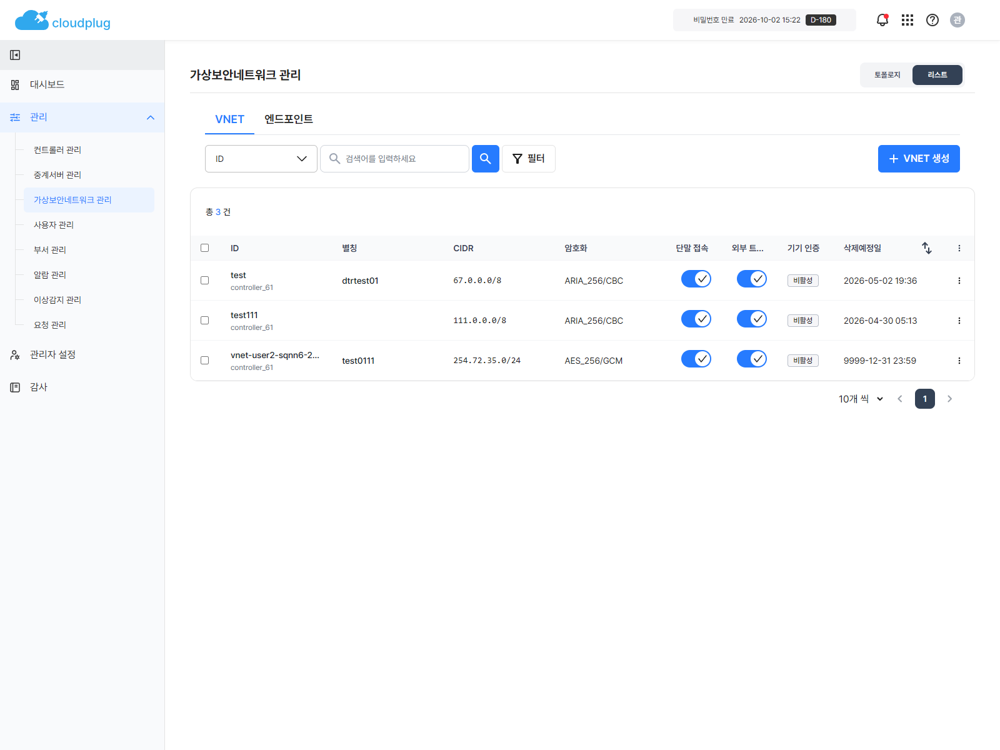 |
▶메뉴 위치: 좌측 메뉴 > 관리 > 가상보안네트워크 관리 > VNET
▶기능 설명:
VNET 목록 조회, 생성, 수정, 삭제를 수행한다.
VNET 목록을 조회하고 검색과 필터로 대상을 찾는다.
1. VNET 화면을 연다.
2. 필터와 검색으로 대상을 찾는다.
3. 별칭, 연결 장비, 보안 옵션, 상태를 확인한다.
| 화면명 | 이미지 |
|---|---|
| VNET 목록 화면 |  |
생성 팝업에서 기본 정보, 연결 장비, 암호화 설정, IP 대역을 입력한다.
1. `생성` 버튼을 클릭한다.
2. 기본 정보와 컨트롤러, 필요 시 중계서버를 선택한다.
3. 암호화 알고리즘, 모드, IP 대역과 길이를 설정한다.
4. 보안 옵션을 설정한 뒤 `생성하기`를 클릭한다.
IP 대역이 기존 VNET과 겹치지 않는지 먼저 확인한다.
| 화면명 | 이미지 |
|---|---|
| VNET 생성 팝업 |  |
수정 모드 화면에서 별칭과 운영 옵션을 변경한다.
1. 수정할 VNET 행의 `수정` 버튼을 클릭한다.
2. 별칭, 연결 장비, 보안 옵션을 수정한다.
3. 저장 후 목록에 변경 값이 반영됐는지 확인한다.
수정 시 별칭, 단말 접속 허용, 외부 트래픽 허용, 기기 인증 여부, 삭제 예정일을 확인한다.
| 화면명 | 이미지 |
|---|---|
| VNET 수정 화면 | 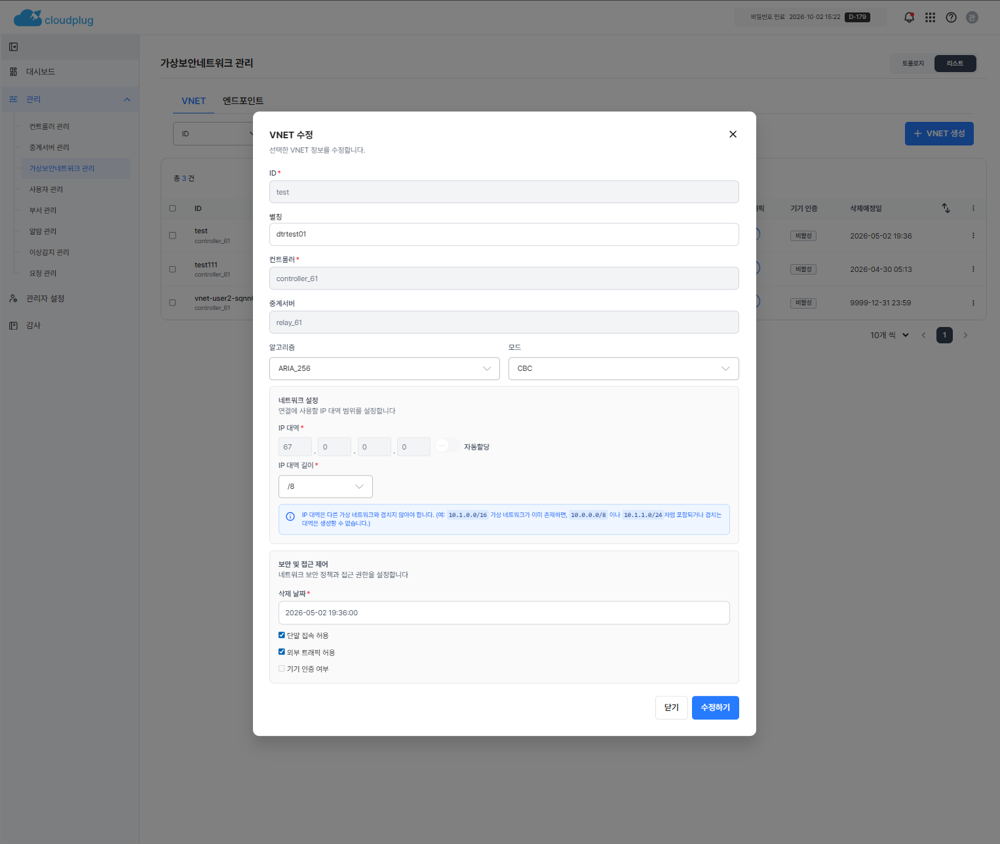 |
삭제 확인 팝업을 통해 VNET을 제거한다.
1. 삭제할 VNET 행의 `삭제` 버튼을 클릭한다.
2. `VNET 삭제 확인` 팝업에서 삭제 대상을 확인한다.
3. `삭제` 버튼을 눌러 확정한다.
4. 목록에서 제거 여부를 확인한다.
VNET 삭제 시 연결된 엔드포인트와 사용자 할당 관계에 영향이 있을 수 있다.
| 화면명 | 이미지 |
|---|---|
| VNET 삭제 확인 화면 | 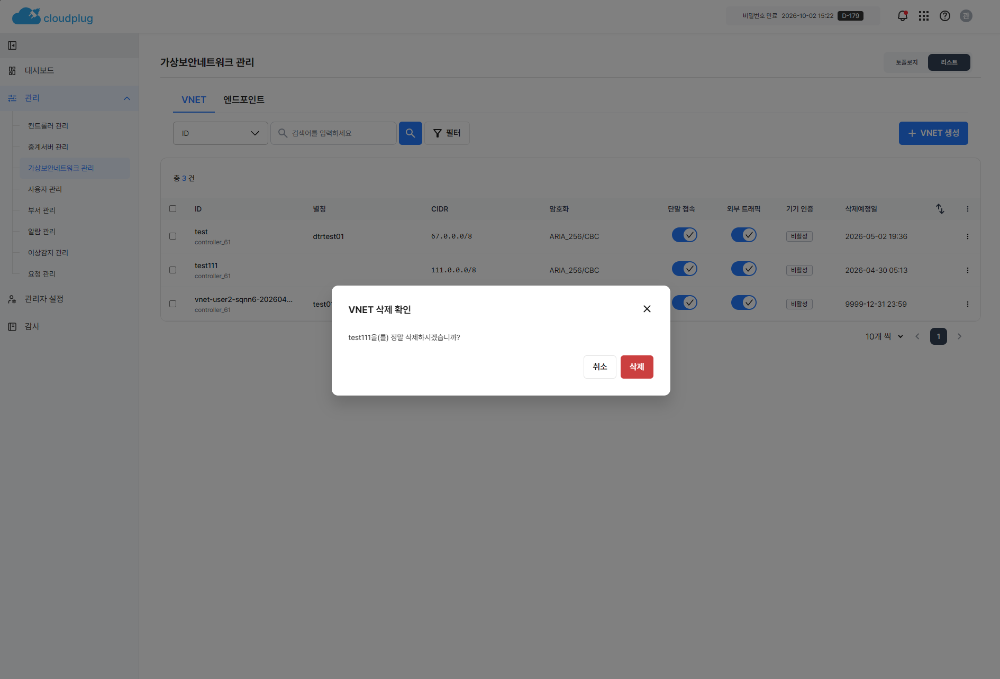 |
▶메뉴 위치: 좌측 메뉴 > 관리 > 가상보안네트워크 관리 > 엔드포인트
▶기능 설명:
엔드포인트 목록을 조회하고 생성, 수정, 삭제, 사용자 할당과 할당 해제를 수행한다.
엔드포인트 목록을 조회하고 장치 상태와 사용자 할당 여부를 확인한다.
1. 엔드포인트 화면을 연다.
2. 검색과 필터로 대상을 조회한다.
3. 장치 상태, 사용자할당 열, 역할 정보를 확인한다.
| 화면명 | 이미지 |
|---|---|
| 엔드포인트 목록 화면 |  |
엔드포인트 생성 팝업에서 VNET과 장치 정보를 입력해 새 엔드포인트를 등록한다.
1. `생성` 버튼을 클릭한다.
2. VNET, 엔드포인트 ID, 별칭, 역할을 입력한다.
3. 네트워크 주소, CIDR 길이, 인터페이스 정보를 입력한다.
4. 저장 후 목록에 반영됐는지 확인한다.
| 화면명 | 이미지 |
|---|---|
| 엔드포인트 생성 팝업 |  |
수정 화면에서 별칭, 역할, 주소, 인터페이스 정보를 변경한다.
1. 수정할 엔드포인트의 `수정` 버튼을 클릭한다.
2. 생성 팝업과 같은 형식의 수정 화면에서 값을 변경한다.
3. 저장 후 목록 반영 여부를 확인한다.
| 화면명 | 이미지 |
|---|---|
| 엔드포인트 수정 화면 | 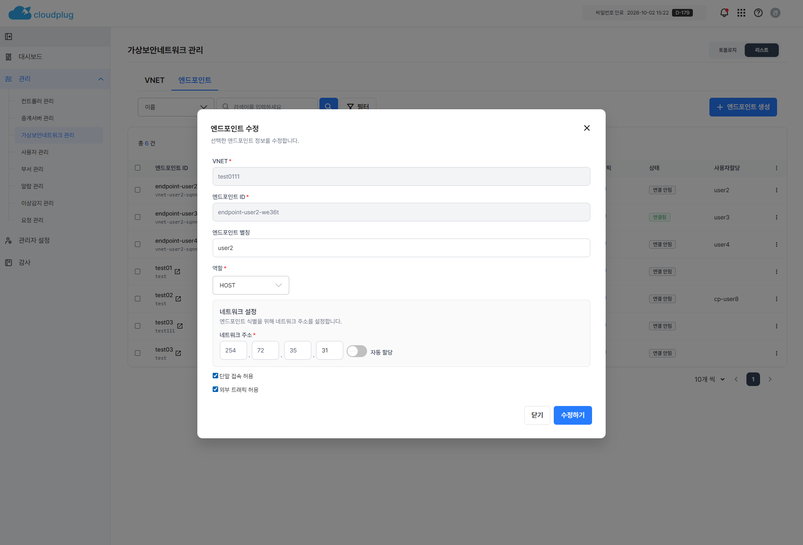 |
삭제 확인 팝업을 통해 엔드포인트를 제거한다.
1. 삭제할 엔드포인트의 `삭제` 버튼을 클릭한다.
2. `엔드포인트 삭제 확인` 팝업에서 대상을 확인한다.
3. `삭제` 버튼을 눌러 확정한다.
4. 목록에서 제거 여부를 확인한다.
| 화면명 | 이미지 |
|---|---|
| 엔드포인트 삭제 확인 화면 | 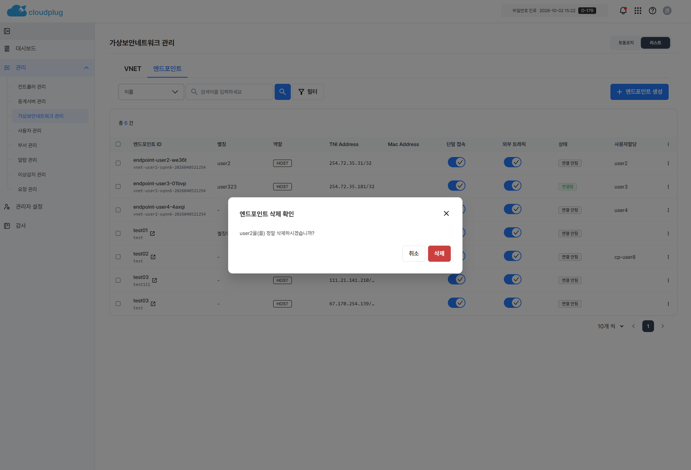 |
사용자 선택 팝업에서 대상 사용자를 검색해 엔드포인트에 할당한다.
1. 엔드포인트 행 우측 끝 `더보기` 메뉴에서 `사용자 할당`을 선택한다.
2. ID, 이름, 휴대폰번호, 이메일로 사용자를 검색한다.
3. 할당할 사용자를 선택한다.
4. 저장 후 `사용자할당` 열에 사용자가 표시되는지 확인한다.
이미 사용자가 할당된 엔드포인트에는 새 할당을 바로 할 수 없다.
| 화면명 | 이미지 |
|---|---|
| 엔드포인트 작업 메뉴 | 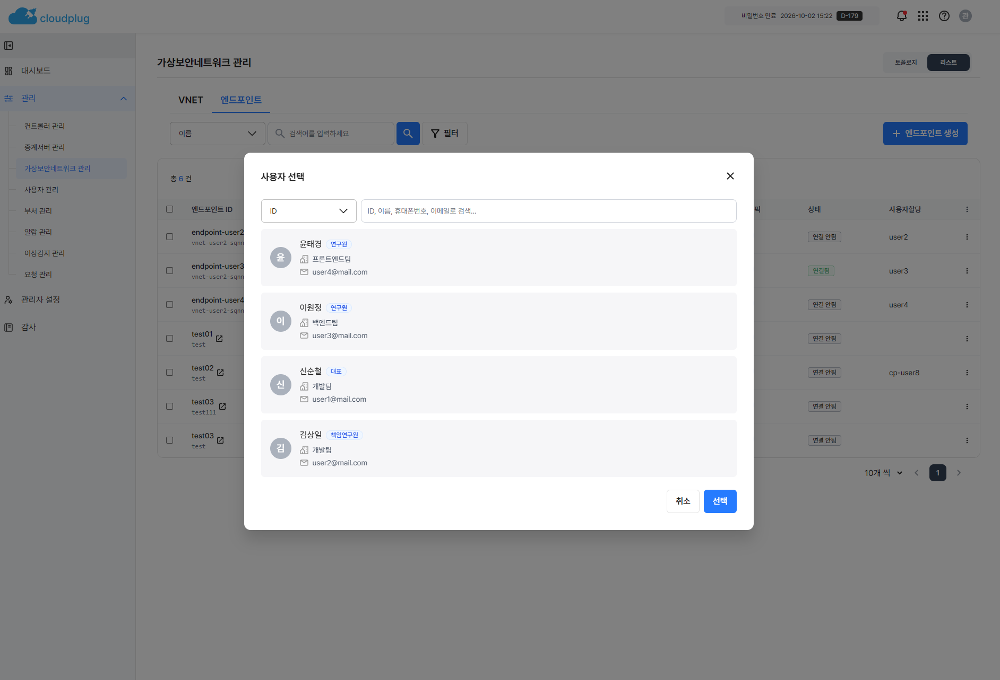 |
할당된 사용자를 해제해 엔드포인트를 미할당 상태로 되돌린다.
1. 사용자 할당이 된 항목의 `할당 해제` 버튼을 클릭한다.
2. `사용자 할당 해제 확인` 팝업에서 해제 여부를 다시 확인한다.
3. `해제` 버튼을 눌러 확정한다.
4. 목록에서 `사용자할당` 열이 비어 있는지 확인한다.
| 화면명 | 이미지 |
|---|---|
| 엔드포인트 할당 해제 확인 | 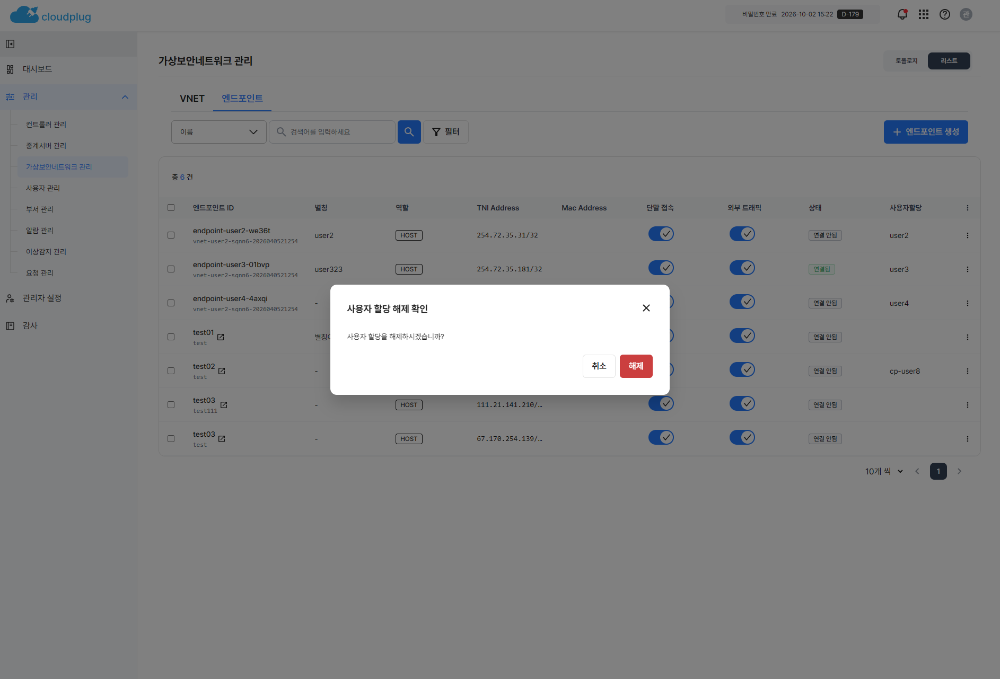 |
▶메뉴 위치: 좌측 메뉴 > 관리 > 가상보안네트워크 관리 > 토폴로지
▶기능 설명:
그룹 내 네트워크 구조를 시각적으로 확인한다.
네트워크 구조와 장치 연결 상태를 확인한다.
▶사용 절차:
1. 토폴로지 화면을 연다.
2. 검색 후 대상 네트워크를 선택한다.
3. 연결 구조와 장치 상태를 확인한다.
▶스크린샷:
| 화면명 | 이미지 |
|---|---|
| 토폴로지 화면 | 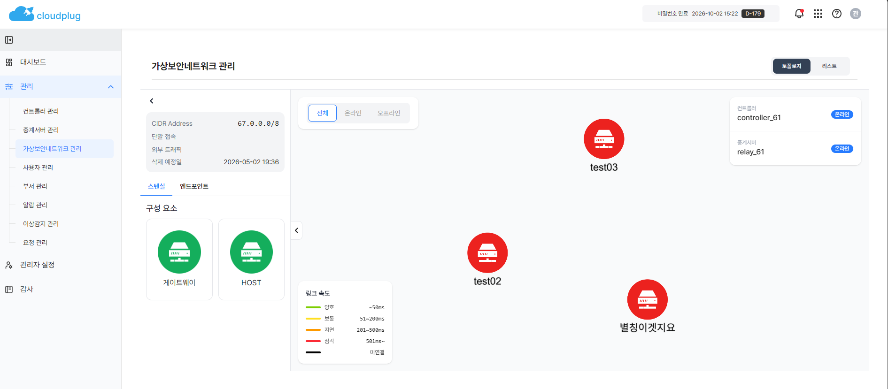 |
▶메뉴 위치: 좌측 메뉴 > 관리 > 사용자 관리
▶기능 설명:
사용자 조회, 사용자 등록, 사용자 수정, 승인권자와 부서장 속성 관리를 수행한다.
▶처리 결과 / 유의사항:
그룹 범위 사용자만 조회된다.
결재권자 설정은 요청 처리 흐름에 바로 반영되므로 저장 전 역할을 다시 확인한다.
그룹 범위 사용자 목록을 조회하고 부서, 직위, 승인권한 반영 여부를 확인한다.
1. 사용자 관리 화면으로 이동한다.
2. 검색과 필터로 사용자를 찾는다.
3. 부서, 직위, 승인권자, 부서장 속성을 확인한다.
| 화면명 | 이미지 |
|---|---|
| 사용자 관리 화면 | 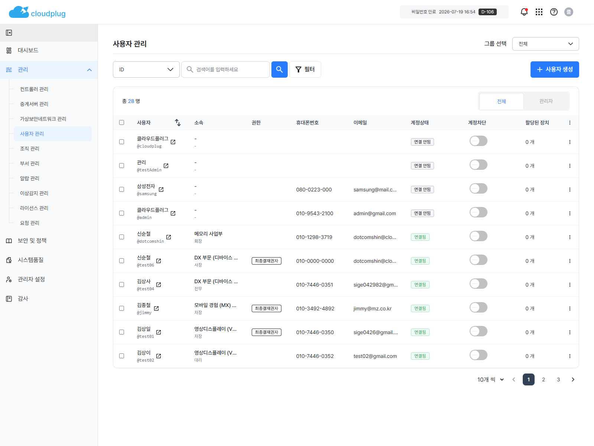 |
필수 항목과 부서, 직위를 입력해 새 사용자를 등록한다.
1. `등록` 버튼을 클릭한다.
2. `사용자 생성` 팝업에서 필수 항목을 입력한다.
3. 부서를 선택하고 필요 시 직위, 승인권자, 부서장 여부를 지정한다.
4. 저장 후 목록에서 검색이 되는지 확인한다.
| 화면명 | 이미지 |
|---|---|
| 사용자 생성 팝업 |  |
사용자 생성과 같은 형식의 수정 화면에서 사용자 정보를 변경한다.
1. 수정할 사용자 행의 `수정` 버튼을 클릭한다.
2. 이름, 이메일, 휴대폰번호, 부서, 직위, 승인권한을 수정한다.
3. 저장 후 목록과 상세 패널에서 반영 여부를 확인한다.
| 화면명 | 이미지 |
|---|---|
| 사용자 수정 화면 | 스크린샷 추가 예정 |
삭제 확인 팝업을 통해 사용자를 삭제한다.
1. 삭제할 사용자 행의 `더보기` 메뉴에서 `삭제`를 선택한다.
2. `사용자 삭제 확인` 팝업에서 대상을 확인한다.
3. `삭제` 버튼을 눌러 확정한다.
4. 목록에서 제거 여부를 확인한다.
| 화면명 | 이미지 |
|---|---|
| 사용자 삭제 확인 | 스크린샷 추가 예정 |
사용자 목록의 계정차단 토글을 이용해 차단 또는 해제를 수행한다.
1. 사용자 목록의 `계정차단` 토글을 확인한다.
2. 차단할 경우 토글을 켠다.
3. 해제할 경우 토글을 끈다.
4. 완료 메시지와 상태 반영 여부를 확인한다.
사용자 상세 패널에서 미할당 엔드포인트를 사용자에게 연결한다.
1. 사용자 이름을 클릭해 상세 패널을 연다.
2. `장치 할당` 기능을 실행한다.
3. 미할당 엔드포인트를 검색해 선택한다.
4. 저장 후 사용자 상세의 장치 목록에 반영됐는지 확인한다.
| 화면명 | 이미지 |
|---|---|
| 사용자 상세 패널 화면 | 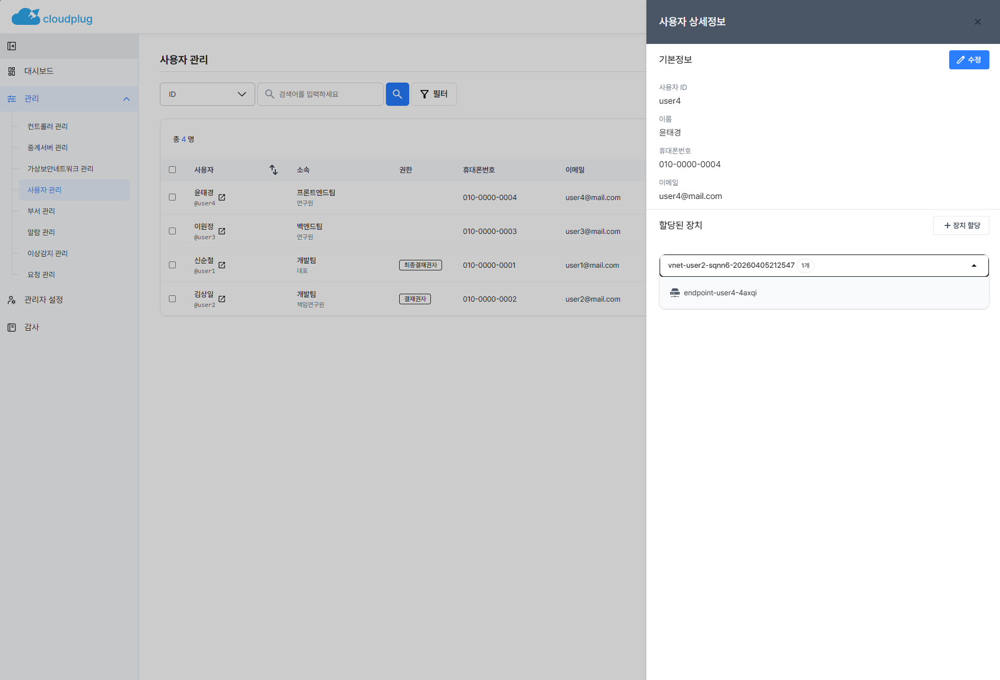 |
사용자 상세 패널에서 연결된 장치를 해제한다.
1. 사용자 상세 패널에서 장치 목록을 확인한다.
2. 해제할 장치에서 `할당 해제`를 선택한다.
3. 확인 팝업에서 해제를 확정한다.
4. 장치 목록에서 제거 여부를 확인한다.
▶메뉴 위치: 좌측 메뉴 > 관리 > 부서 관리
▶기능 설명:
그룹 내 부서와 직위를 관리한다.
부서 트리와 직위 표를 조회해 현재 조직 구성을 확인한다.
1. 부서 관리 화면을 연다.
2. 트리에서 부서를 선택한다.
3. 우측 상세 폼과 직위 목록을 확인한다.
| 화면명 | 이미지 |
|---|---|
| 부서 관리 화면 | 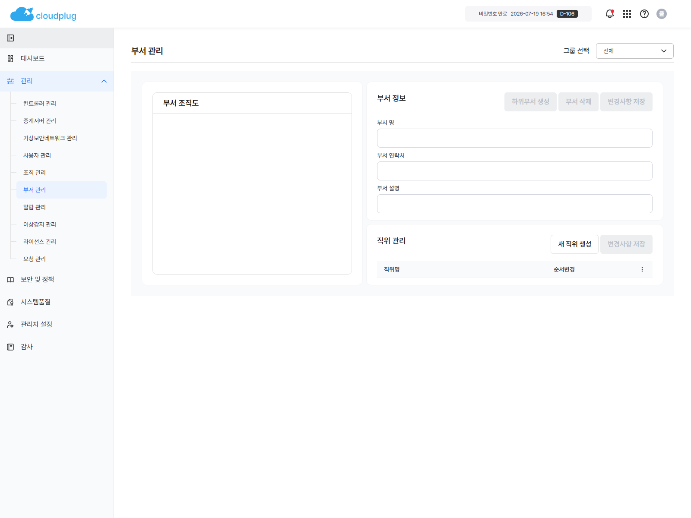 |
직위 등록 팝업에서 직위명을 입력해 새 직위를 만든다.
1. `직위 등록` 버튼을 클릭한다.
2. `직위 생성` 팝업에 직위명을 입력한다.
3. 저장한다.
| 화면명 | 이미지 |
|---|---|
| 직위 생성 팝업 | 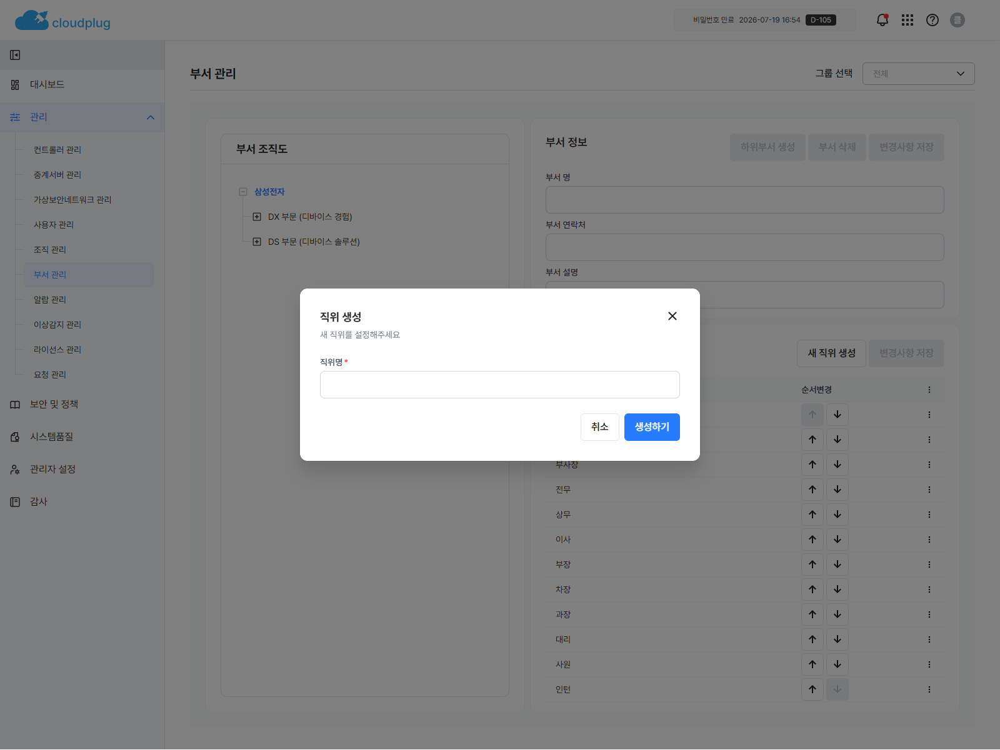 |
상위 부서를 선택한 뒤 하위부서를 생성한다.
1. 상위 부서를 선택한다.
2. `하위부서 생성` 버튼을 클릭한다.
3. 부서명, 번호, 설명을 입력한다.
4. 저장 후 트리에 새 부서가 보이는지 확인한다.
선택한 부서의 이름, 번호, 설명을 수정한다.
1. 수정할 부서를 선택한다.
2. 우측 폼에서 이름, 번호, 설명을 수정한다.
3. 저장 버튼을 클릭한다.
4. 트리와 상세 폼에 변경 내용이 반영됐는지 확인한다.
부서 삭제 버튼으로 선택한 부서를 제거한다.
1. 삭제할 부서를 선택한다.
2. `부서 삭제` 버튼을 클릭한다.
3. 확인 팝업에서 삭제를 확정한다.
4. 트리에서 해당 부서가 제거됐는지 확인한다.
그룹 노드 자체는 삭제할 수 없고, 하위 부서나 연결된 사용자가 있으면 영향 범위를 먼저 검토한다.
직위 관리 표에서 직위명을 수정하고 필요 시 순서를 조정한다.
1. 수정할 직위의 편집 버튼을 클릭한다.
2. 직위명을 수정한다.
3. 저장 버튼을 눌러 변경을 확정한다.
4. 필요 시 순서 변경 후 `변경사항 저장`으로 최종 반영한다.
직위 삭제 팝업을 통해 직위를 제거한다.
1. 삭제할 직위의 `삭제` 버튼을 클릭한다.
2. `직위 삭제` 팝업에서 삭제 여부를 확인한다.
3. `삭제`를 눌러 확정한다.
4. 직위 목록에서 제거 여부를 확인한다.
▶메뉴 위치: 좌측 메뉴 > 관리 > 알람 관리
▶기능 설명:
발생한 알람 목록을 확인하고 상태와 발생 시점을 확인한다.
알람 상세보기, 알람 해결, 알람 코멘트 입력 기능을 사용할 수 있다.
알람 목록에서 발생한 이벤트를 조회하고 대응이 필요한 자원을 식별한다.
1. 알람 관리 화면을 연다.
2. 상태와 발생 시점을 확인한다.
3. 대응이 필요한 자원을 식별한다.
| 화면명 | 이미지 |
|---|---|
| 알람 관리 화면 | 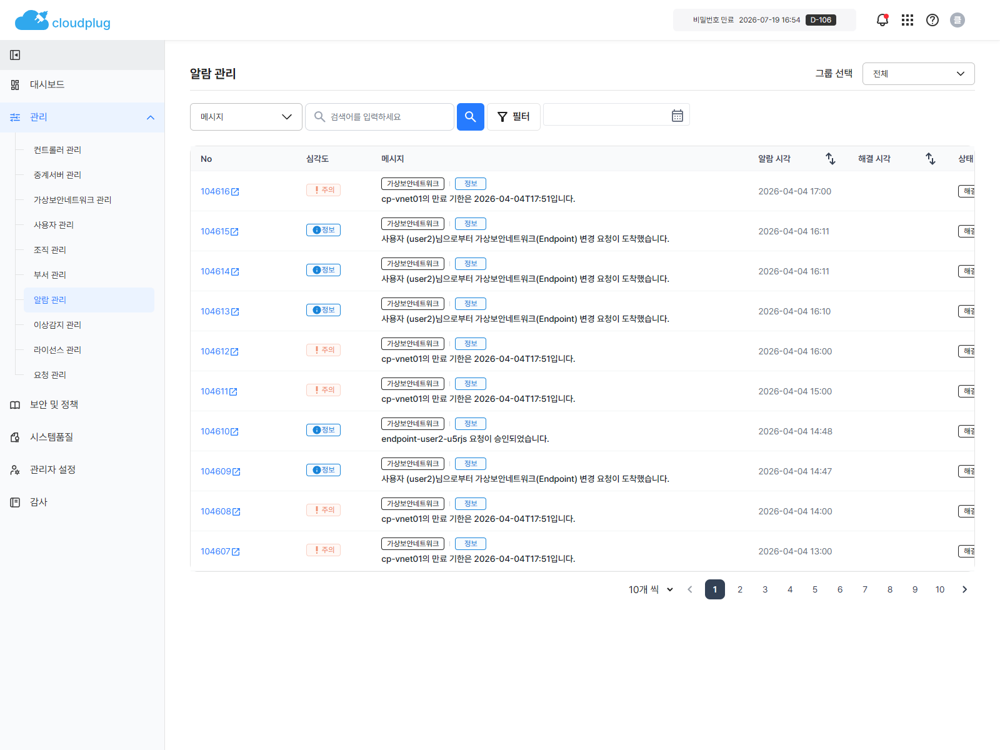 |
알람의 상세 내용을 확인하려면 목록에서 해당 알람의 `No`를 클릭한다.
상세 화면에서는 해결 상태, 알람 메시지, 심각도와 유형, 네트워크 유형, 발생/해결 시각을 확인할 수 있다.
| 항목 | 설명 | 표시 정보 |
|---|---|---|
| 해결 상태 | 해결 여부 상태 | `해결 안 됨(빨강)` / `해결됨(파랑)` 상태 표시, `알람 해결` 버튼을 통해 상태 변경 가능 |
| 알람 메시지 | 알람의 상세 메시지 | 발생 원인 및 대상(사용자, 장비명 등) 문구 표시 |
| 주요 정보 | 알람의 심각도, 유형, 네트워크 유형 | 심각도(긴급, 경고, 주의, 정보), 유형(보안, 리소스, 장애, 정보), 네트워크 유형(가상보안네트워크, 인프라, 네트워크) 표시 |
| 시간 정보 | 발생 및 해결 시점 | 알람 시각은 최초 감지 시각, 해결 시각은 조치 완료 시각 |
| 화면명 | 이미지 |
|---|---|
| 알람 상세보기 화면 | 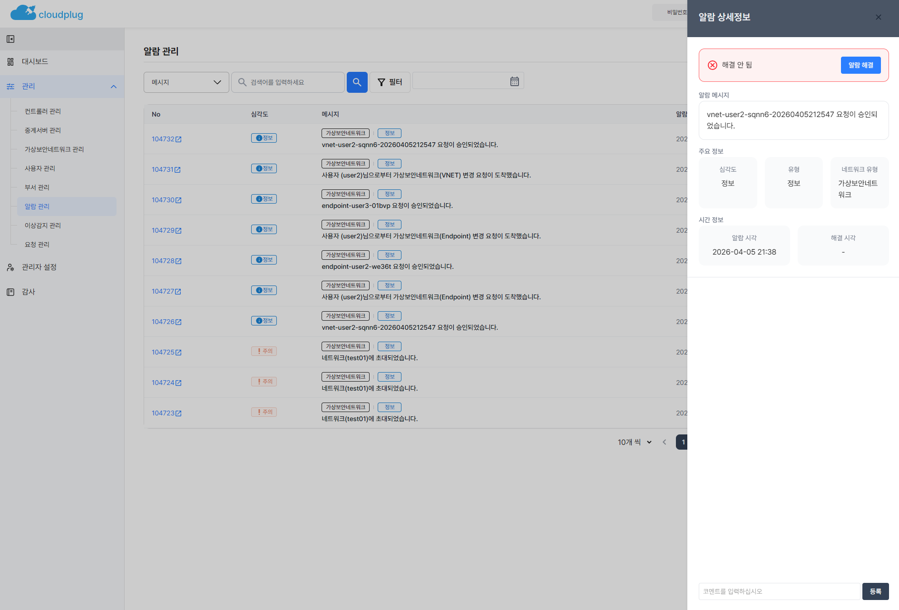 |
알람 상세보기에서 `알람 해결` 버튼을 클릭해 조치 내용을 기록하고 상태를 변경한다.
알람 해결 시 상태가 `해결 안 됨`에서 `해결됨`으로 변경되며 해결 시각이 기록된다.
이미 해결된 알람은 다시 해결 처리 또는 해결 해제를 할 수 없고 조치 이력만 확인할 수 있다.
| 항목 | 설명 | 입력 가이드 |
|---|---|---|
| 작업자 | 조치를 수행한 관리자 계정 | 현재 로그인한 관리자의 아이디가 자동 표시됨 (수정 불가) |
| 작업 내역 | 실제 장애 조치 또는 승인 내용 기록 | 최대 2,000자까지 상세 내용 입력 가능 |
| 화면명 | 이미지 |
|---|---|
| 알람 해결 팝업창 | 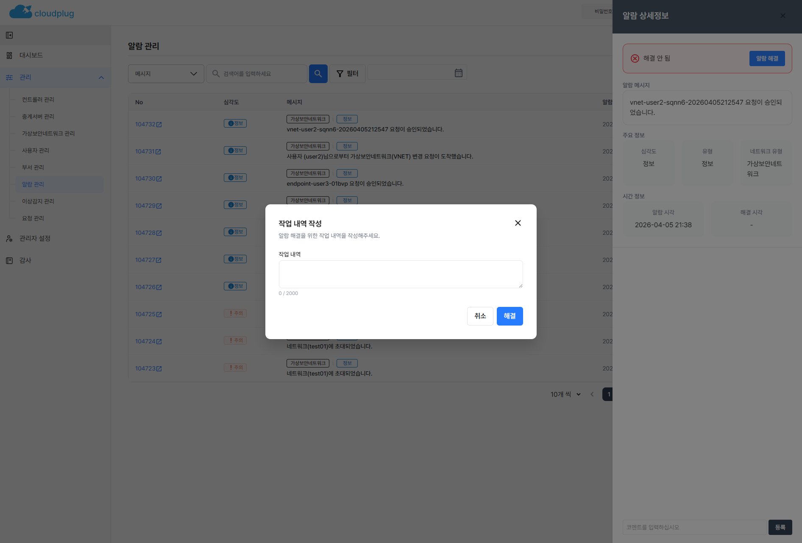 |
알람 상세보기 하단에 코멘트를 입력한 뒤 `등록` 버튼을 클릭해 조치 진행 상황이나 특이사항을 남긴다.
| 항목 | 설명 | 입력 가이드 |
|---|---|---|
| 코멘트 내용 | 공유 및 기록용 상세 메모 | 최소 1자 이상, 최대 1,000자 이하로 작성 가능. 조치 진행 중인 사항이나 특이사항 기록 |
| 작성자 | 코멘트를 등록한 계정 | 현재 로그인된 관리자의 계정 정보가 자동으로 기록됨 |
| 화면명 | 이미지 |
|---|---|
| 알람 코멘트 입력 및 조회 |
▶메뉴 위치: 좌측 메뉴 > 관리 > 이상감지 관리
▶기능 설명:
시스템 운영 중 발생하는 보안 위협, 시스템 장애, 리소스 과부하 상황에 대한 임계치를 설정한다.
설정된 기준값을 초과하는 이벤트가 발생하면 즉시 알람을 생성하여 관리자에게 통보한다.
이상감지 관리에서 설정한 주의, 경고, 긴급 단계의 기준에 도달하면 시스템은 자동으로 알람을 발생시킨다.
발생한 알람은 `알람 관리` 메뉴의 목록에서 실시간으로 확인할 수 있다.
이상감지는 보안, 장애, 리소스 세 가지 영역으로 분류되어 관리된다.
| 분류 | 주요 설정 및 감지 항목 | 알람 발생 목적 |
|---|---|---|
| 보안 | 비정상 접근 시도 수, 외부 트래픽(LAN→WAN) 감시, 이상 트래픽 감지 등 | 비인가 사용자의 침입 시도 및 정보 유출 의심 행위 차단 |
| 장애 | 전체 요청 대비 오류 발생률, 서비스 응답 지연 시간 등 | 시스템 서비스의 품질 저하 및 기능 마비 상황 조기 발견 |
| 리소스 | 서버 CPU 사용률, 메모리 사용률 임계치 등 | 하드웨어 자원 부족으로 인한 시스템 중단 사고 예방 |
각 항목은 위험 수준에 따라 3단계로 수치를 입력하며, 해당 값에 도달하면 알람 관리 메뉴에 각각 다른 심각도로 기록된다.
주의: 관찰이 필요한 초기 이상 징후 발생 시
경고: 즉각적인 원인 파악 및 모니터링이 필요한 상태
긴급: 시스템 장애 직전 또는 보안 침해 발생으로 즉시 조치가 필요한 상태
| 화면명 | 이미지 |
|---|---|
| 이상감지 관리 화면 | 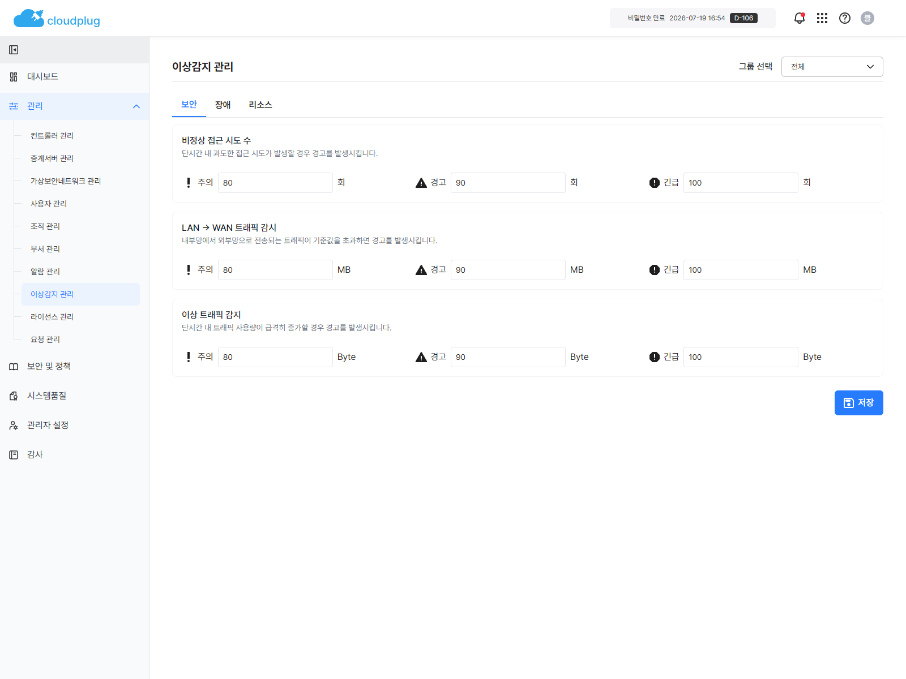 |
메뉴 진입: 좌측 메뉴 > 관리 > 이상감지 관리 > 보안
설정 화면에서 수치를 입력한 뒤 하단의 `저장` 버튼을 클릭한다.
외부 트래픽 감시: 가상망 내부에서 외부(Internet)로 나가는 트래픽의 이상 징후 감지
비정상 접근 시도: 짧은 시간 내 반복되는 로그인 실패나 비인가 접속 시도 횟수 설정
이상 트래픽: 평상시 범위를 벗어난 대용량 데이터 전송 행위 감지
| 화면명 | 이미지 |
|---|---|
| 보안 이상감지 설정 | 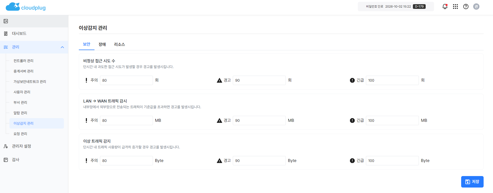 |
메뉴 진입: 좌측 메뉴 > 관리 > 이상감지 관리 > 장애
설정 화면에서 수치를 입력하거나 드래그한 뒤 하단의 `저장` 버튼을 클릭한다.
서비스 오류율: 전체 요청 수 대비 발생하는 에러 발생 비율(%) 설정
응답 지연 시간: 시스템 응답이 평소보다 늦어질 경우의 대기 시간(ms) 기준 설정
연결 상태: 컨트롤러 및 주요 장비와의 통신 단절 감지 기준
| 화면명 | 이미지 |
|---|---|
| 장애 이상감지 설정 | 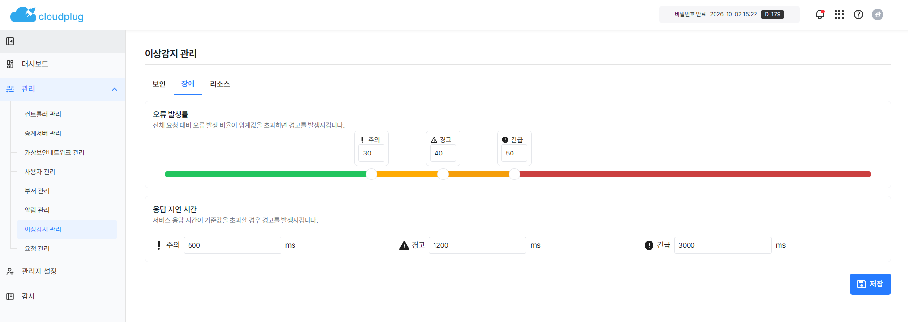 |
메뉴 진입: 좌측 메뉴 > 관리 > 이상감지 관리 > 장
설정 화면에서 수치를 입력하거나 드래그한 뒤 하단의 `저장` 버튼을 클릭한다.
CPU 사용률: 프로세서 처리 용량의 단계별 상한선(%) 지정
메모리 사용률: 가용 메모리 부족 상황을 대비한 임계치(%) 지정
디스크/IP 자원: 저장 공간 및 가용 가상 IP 주소의 잔여량 부족 감지
| 화면명 | 이미지 |
|---|---|
| 리소스 이상감지 설정 | 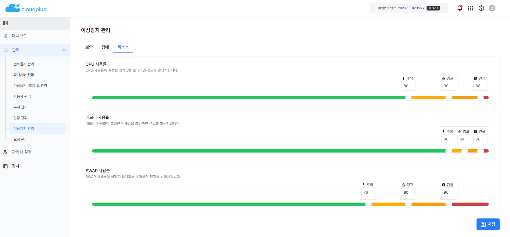 |
▶메뉴 위치: 좌측 메뉴 > 관리 > 요청 관리
▶기능 설명:
그룹 범위 요청을 승인 또는 반려한다.
▶처리 시 판단 기준:
요청 대상이 자기 그룹 범위인지 먼저 확인한다.
사용자와 장치, 네트워크 관계가 맞는지 확인한다.
반려할 경우 재요청이 가능하도록 사유를 구체적으로 작성한다.
요청 목록을 조회하고 대기, 승인, 반려 상태를 필터링한다.
1. 요청 관리 화면을 연다.
2. 상태 필터에서 원하는 상태를 선택한다.
3. 요청 대상과 요청 유형을 확인한다.
| 화면명 | 이미지 |
|---|---|
| 요청 관리 화면 | 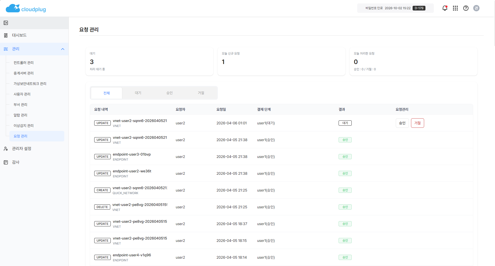 |
승인 확인 팝업을 통해 대기 요청을 승인한다.
1. 처리할 요청 행에서 `승인` 버튼을 클릭한다.
2. `결재 승인` 확인 팝업에서 승인 여부를 다시 확인한다.
3. `승인` 버튼을 눌러 처리한다.
4. 요청 결과가 `승인`으로 바뀌었는지 확인한다.
| 화면명 | 이미지 |
|---|---|
| 요청 승인 확인 팝업 | 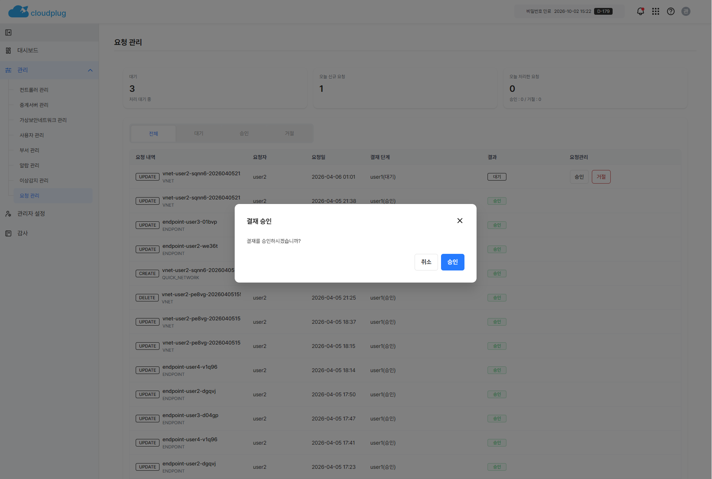 |
반려 사유 입력 팝업에서 사유를 작성하고 요청을 반려한다.
1. 처리할 요청 행에서 `거절` 버튼을 클릭한다.
2. 반려 사유 입력 팝업에서 사유를 작성한다.
3. `반려`를 눌러 처리한다.
4. 요청 결과와 반려 사유가 목록에 반영됐는지 확인한다.
| 화면명 | 이미지 |
|---|---|
| 요청 반려 팝업 | 스크린샷 추가 예정 |
▶메뉴 위치: 좌측 메뉴 > 관리자 설정
▶기능 설명:
기본 정보 수정, 비밀번호 변경, 그룹 동기화를 수행한다.
작업 반영이 늦게 보이거나 사용자, 부서, 직위 변경 후 최신 상태를 맞춰야 할 때 마지막 점검 화면으로 사용한다.
▶사용 절차:
1. 관리자 설정 화면을 연다.
2. 이름, 이메일, 휴대폰 번호를 수정한다.
3. 저장 또는 비밀번호 변경을 수행한다.
4. 필요 시 동기화 버튼을 실행한다.
▶입력 항목:
| 항목 | 설명 | 입력 가이드 |
|---|---|---|
| 관리자 이름 | 표시 이름 | 필수 입력 |
| 이메일 주소 | 이메일 | 형식 확인 필요 |
| 휴대폰 번호 | 연락처 | 필수 입력 |
▶화면 내 주요 버튼:
| 버튼명 | 설명 |
|---|---|
| 동기화 | 소속 그룹 기준 동기화 수행 |
| 비밀번호 변경 | 비밀번호 변경 |
| 설정 저장 | 기본 정보 저장 |
▶처리 결과 / 유의사항:
비밀번호 확인 모달 이후 저장된다.
그룹 관리자에게는 전체 동기화 대신 그룹 데이터 동기화 버튼이 표시된다.
대량 변경 후 상태 반영이 늦을 때 그룹 데이터 동기화를 검토한다.
비밀번호 변경 시에는 현재 비밀번호와 새 비밀번호 확인 값 일치를 먼저 점검한다.
▶스크린샷:
| 화면명 | 이미지 |
|---|---|
| 관리자 설정 화면 | 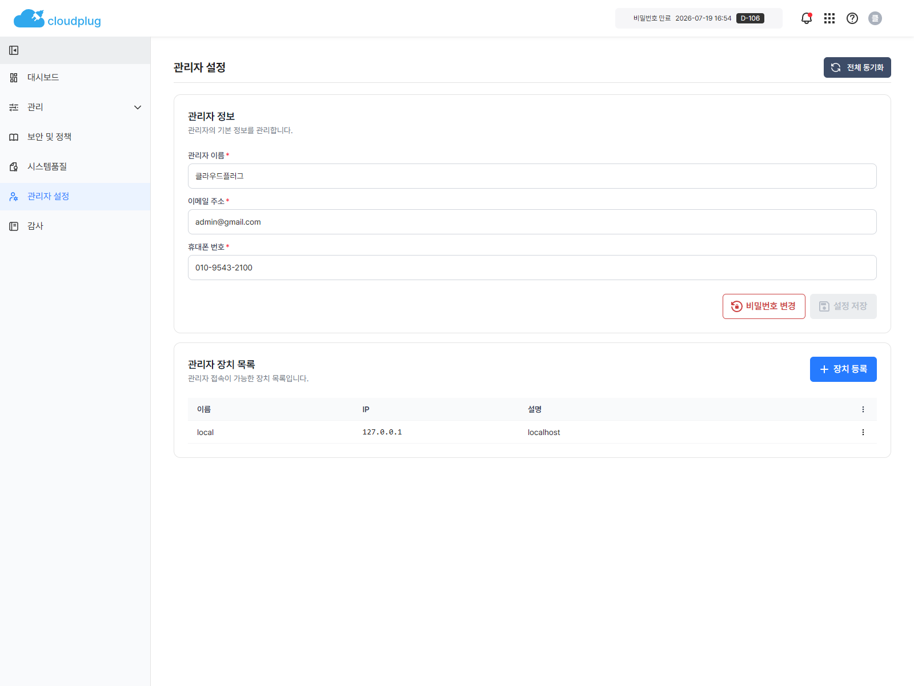 |
▶추가 화면:
| 화면명 | 이미지 |
|---|---|
| 비밀번호 변경 팝업 | 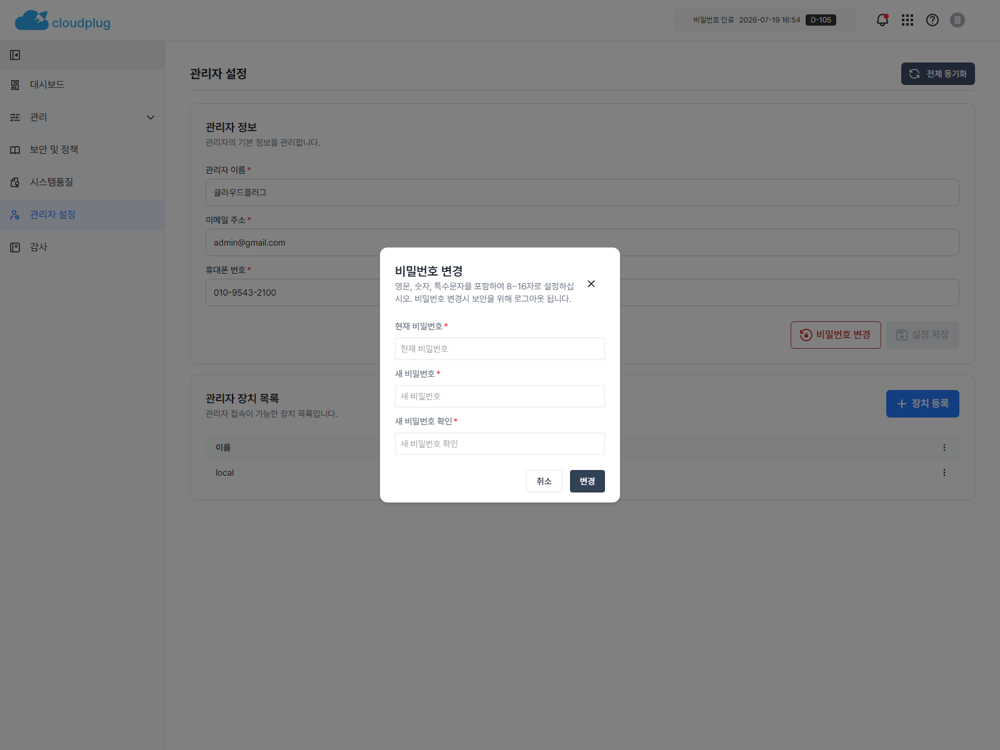 |
▶메뉴 위치: 좌측 메뉴 > 감사
▶기능 설명:
그룹 범위 감사 로그를 조회하고 백업한다.
변경 작업이 실제로 반영됐는지 마지막으로 확인하는 운영 마감 화면이다.
▶사용 절차:
1. 감사 화면을 연다.
2. 조건을 지정해 로그를 조회한다.
3. 필요 시 백업 버튼으로 내보낸다.
▶화면 내 주요 버튼:
| 버튼명 | 설명 |
|---|---|
| 백업 | 감사 로그 다운로드 |
▶스크린샷:
| 화면명 | 이미지 |
|---|---|
| 감사 화면 | 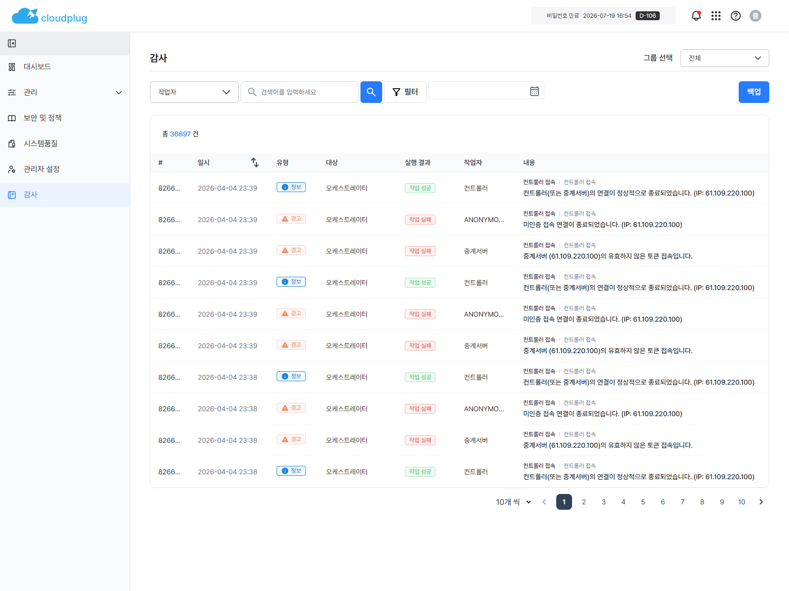 |
▶추가 화면:
| 화면명 | 이미지 |
|---|---|
| 감사 백업 팝업 |  |
대시보드 경고와 요청 대기 건수를 먼저 확인한다.
주요 VNET과 엔드포인트 상태, 알람과 이상감지 발생 여부를 본다.
신규 사용자와 부서 변경 사항이 반영됐는지 확인한다.
변경 대상이 자기 그룹 범위인지 먼저 확인한다.
이미 같은 이름, 같은 대역, 같은 요청이 존재하지 않는지 확인한다.
요청 승인 대상과 네트워크 관계가 맞는지 확인한다.
목록과 상세 화면에 변경 사항이 반영됐는지 확인한다.
요청 상태와 사용자-네트워크 연결 상태가 기대대로 바뀌었는지 확인한다.
감사 화면에서 작업 이력이 남았는지 확인한다.
최고 관리자 전용 메뉴일 수 있다. 그룹 관리자는 `라이선스`, `보안 및 정책`, `시스템품질`, `조직 관리` 메뉴를 사용하지 않는다.
필수 입력값 누락, 중복 이름, 잘못된 형식, 다른 그룹 소속 데이터 여부를 순서대로 확인한다.
이미 다른 승인자가 처리했는지, 반려 사유 입력이 필요한지, 요청 대상이 현재 그룹 범위인지 확인한다.
컨트롤러와 중계서버 선택, IP 대역 중복 여부, 엔드포인트 주소와 역할이 올바른지 다시 확인한다.
| 목적 | 경로 |
|---|---|
| 오늘 상태 확인 | `대시보드` |
| 네트워크 자원 관리 | `관리 > 가상보안네트워크 관리` |
| 사용자와 부서 관리 | `관리 > 사용자 관리`, `관리 > 부서 관리` |
| 요청 처리 | `관리 > 요청 관리` |
| 개인 정보와 동기화 | `관리자 설정` |
| 작업 이력 확인 | `감사` |